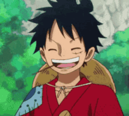
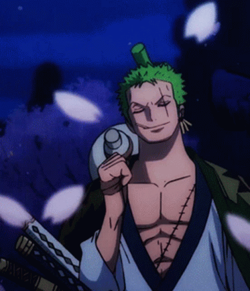
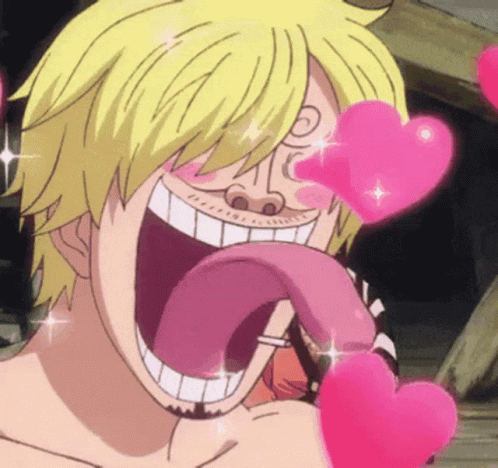

-
Monkey D Luffy
- Haki do Rei
- Gomu Gomu nomi
Meu nome é Monkey D Luffy, e vou me tornar o rei dos piratas
-
Roronoa Zoro
- Haki do Rei
- Não tem fruta
Roronoa Zoro, Caçador de Piratas e quero me tornar o melhor espadachim do mundo
-
Sanji
- Haki da Observação
- Não tem fruta
Sanji, cozinheiro dos Chapéus de Palha e luta muito bem com as pernas
-
Jimbe

- Não tem haki
- Não tem fruta
Ex-Corsário, Jimbe é o Rei dos Mares e luta karatê dos homens-peixe